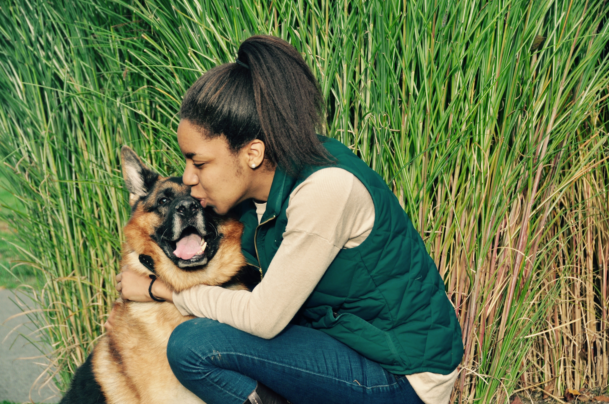

About
About
Hello! My name is Jasmine. I am pursuing a B.A. in Media Arts and Sciences (interdisciplinary Computer Science, Media Studies, and Studio Art degree) with a concentration in Computer Science and a minor in Economics. I'm a developer interested in data visualization, user experience, human-computer interaction and solving problems for the greater good. Social causes I'm interested in include animal welfare, women in tech, health care, and science and technology. My hobbies include fencing, equestrian, finding the best coffee shops in Boston, reading books, and cuddling animals. 